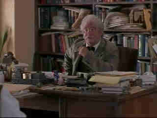

| Critical
Care/C,C+ |
|
Live/1997/109m |
Director Sidney Lumet takes his satirical bite to modern hospital care and
family concerns over death but this time out his material has no teeth. The fantastic energy that
drove Network is missing in Critical Care. Only the very funny Albert Brooks provides
some needed laughs in the role of crooked, babbling Chief of Surgery at a major hospital.
Dr. Werner Ernst is an intern surviving on caffeine and a desire to make lots of
money. When a comatose patient under his charge sets off a tug of war between two half sisters
hungering after their dying father's fortune, Ernst is seduced by one of the pair. She wants him to
pull the plug on her father post haste to her grab the loot according to the will. Meanwhile,
Spader does boring battle with senile Dr. Butz who in a running joke keeps calling Ernst into his
office and can't remember sending for him. To make matters more complex, Ernst is the leading
candidate to join the high tech team of Dr, Hofstader, which will assure his future. What's it
gonna be. Ernst's favorite nurse, Stella, is the single voice of humanity at the hospital. What's
it gonna be? Pull the plug, count the bucks, or dig deep and find a doctor inside?
James Spader sleepwalks through the role of intern Werner Ernst. He can't
find a comic or satiric core to break loose from the confines of a dull script. The usually funny
Kyra Sedgewick and the sister seductress is like a lost visitor roaming the hospital corridors
looking for something funny to say. Helen Mirren is sincere as Nurse Stella, but she seems lost in
another part of the story. Critical Care in antiseptic to a fault.
|

|
|
Brooks supplies some needed laughs as Dr. Butz.©Live
|
The colors on
this widescreen 1.85 DVD are rather washed out and there is a consistent excess of grain. Even the
light output is relatively pale. The image is consistently sharp. Perhaps its a measure of the way
Lumet shot the film. Like the script, the DVD lacks punch and is merely acceptable. The Dolby
Digital 5:1 sound is all right, but the film does not make great use of the selection of hospital
sounds. |
|

The
Movie Poster Archive includes extensive poster images from the films of stars like Susan Hayward,
Kirk Douglas, Katharine Hepburn and many more. Our featured star is Humphrey
Bogart.

Selections from the feature archive include articles on Akira Kurosawa,
Frank Darabont, Blonde Bimbos, Hollywood
Street Gangs, or Vietnam:
The Hollywood Pariah, and many more...
.jpg)
Screen Voices and style of delivery often stamp an actor's screen
image indelibly. Click the lips to read more.
 From
The Adventures of Robin Hood to Casablanca, director Michael Curtiz made movies that delighted
audiences. Click on the image for Michael Curtiz:
Directed Passion. From
The Adventures of Robin Hood to Casablanca, director Michael Curtiz made movies that delighted
audiences. Click on the image for Michael Curtiz:
Directed Passion.
Robert A. Harris

Tilting at Hollywood
He's part of the dynamic duo that restored Lawrence
of Arabia, Spartacus, My Fair Lady and Vertigo. Harris rides a white horse into the for the cause
of preserving our film legacy. Click on the image to read more.
|